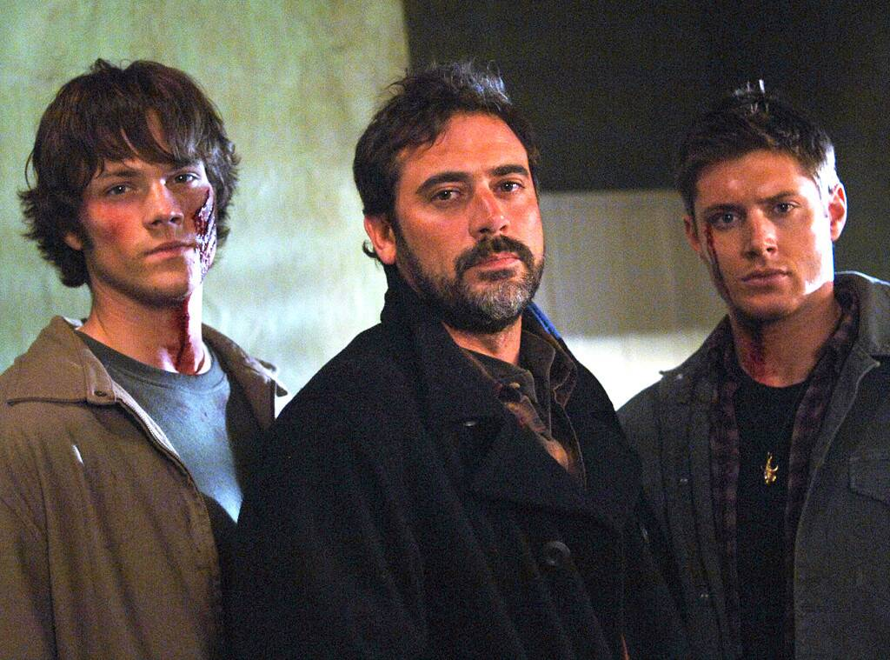

Supernatural is an American television series by Eric Kripke. It is filmed in Vancouver, Canada, and debuted on September 13, 2005, on The WB, and is now part of The CW's lineup. The show follows brothers Sam and Dean Winchester, who travel across America in a black 1967 Chevy Impala investigating and combating paranormal events and other unexplained occurrences, many of them based on American urban legends and folklore as well as classic supernatural creatures such as vampires, werewolves, and ghosts.
When Dean was four years old and Sam only six months old, their mother (Mary) was killed and their father (John) was determined to find and kill the demon who killed his wife, thus raising the boys as hunters of all things evil. Their motto: "Saving people, hunting things; The family business". After John's death the boys continue the family business with the help of a few other hunters, traveling cross country, killing as many monsters as possible and saving as many people as they can. And at the same time they learn that "Family don't end with blood". They will do whatever it takes to save each other and their family. Going up against demons, vampires, werewolves, shapeshifters, demigods, witches, the four horsemen and even angels among other things. They lose family and find new people they call family. They have gone to heaven and hell for each other and will do it all over again. Cause that's what family does and "Family don't end with blood".